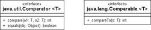
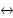

8 Besondere Klassen der Java SE
»Einen Rat befolgen heißt, die Verantwortung verschieben.«
– Johannes Urzidil (1896–1970)

8.1 Vergleichen von Objekten
Sollen Objekte verglichen werden, muss es eine Ordnung dieser Typen geben. Wie sollte das System sonst selbstständig entscheiden können, ob eine Person zum Beispiel kleiner als eine andere Person ist? Weil die eine Person 1,50 Meter groß ist, die andere aber 1,80 Meter, oder weil die eine Person eine Million Euro auf dem Konto hat und die andere nur fünf Euro?[158](Im 10. Jahrhundert lebte der Großwesir Abdul Kassem Ismael, der immer seine gesamte Bibliothek mit 117.000 Bänden mitführte. Die trainierten 400 Kamele transportierten die Werke in alphabetischer Reihenfolge.) Diese Fragen sind wichtig, wenn wir zum Beispiel eine Liste sortieren wollen.
8.1.1 Natürlich geordnet oder nicht?
In Java gibt es zwei unterschiedliche Schnittstellen (in zwei unterschiedlichen Paketen) zur Bestimmung der Ordnung:
- Comparable: Implementiert eine Klasse Comparable, so können sich die Objekte selbst mit anderen Objekten vergleichen. Da die Klassen im Allgemeinen nur ein Sortierkriterium implementieren, wird hierüber eine sogenannte natürliche Ordnung (engl. natural ordering) realisiert.
- Comparator: Eine implementierende Klasse, die sich Comparator nennt, nimmt zwei Objekte an und vergleicht sie. Ein Comparator für Räume könnte zum Beispiel nach der Anzahl der Personen oder auch nach der Größe in Quadratmetern vergleichen; die Implementierung von Comparable wäre nicht sinnvoll, weil hier nur ein Kriterium natürlich umgesetzt werden kann, ein Raum aber nicht die Ordnung hat.
Zusammenfassend lässt sich sagen: Während Comparable üblicherweise nur ein Sortierkriterium umsetzt, kann es viele Extraklassen vom Typ Comparator geben, die jeweils unterschiedliche Ordnungen definieren.
Comparable und Comparator in der Java-API
Eine Implementierung von Comparable findet sich genau dort, wo eine natürliche Ordnung naheliegt, etwa bei:
- String
- BigDecimal, BigInteger, Byte, Character, Double, Float, Integer, Long, Short
- Date
- File, URI
- Enum
- TimeUnit
Von Comparator finden wir in der API-Dokumentation nur java.text.Collator vermerkt.
Abbildung 8.1: UML-Diagramm von Comparator und Comparable
8.1.2 Die Schnittstelle Comparable
Die Schnittstelle Comparable kommt aus dem java.lang-Paket und deklariert eine Methode:
interface java.lang.Comparable<T> |
- int compareTo(T o)
Vergleicht sich mit einem anderen Objekt.
| Hinweis |
|
Wichtig ist neben einer Implementierung von compareTo() auch die passende Realisierung in equals(). Sie ist erst dann konsistent, wenn e1.compareTo(e2) == 0 das gleiche Ergebnis wie e1.equals(e2) liefert, wobei e1 und e2 den gleichen Typ besitzen. Ein Verstoß |
|
gegen diese Regel kann bei sortierten Mengen schnell Probleme bereiten; ein Beispiel nennt die API-Dokumentation. Auch sollte die hashCode()-Methode korrekt realisiert sein, denn sind Objekte gleich, müssen auch die Hashcodes gleich sein. Und die Gleichheit bestimmen eben equals()/compareTo(). |
e.compareTo(null) sollte eine NullPointerException auslösen, auch wenn e.equals(null) die Rückgabe false liefert.
8.1.3 Die Schnittstelle Comparator
Die Schnittstelle Comparator kommt aus dem Paket java.util und deklariert:
interface java.util.Comparator<T> |
- int compare(T o1, T o2)
Vergleicht zwei Argumente auf ihre Ordnung. - boolean equals(Object obj)
Testet, ob Comparator-Objekte gleich sind. Das testet keine Gleichheit von Objekten! Die Methode muss nicht zwingend implementiert werden, da ja schon Object eine Implementierung bereitstellt. Sie steht hier nur, damit eine API-Dokumentation dieses Missverständnis erklärt.
8.1.4 Rückgabewerte kodieren die Ordnung
Der Rückgabewert von compare() beim Comparator beziehungsweise compareTo() bei Comparable ist <0, =0 oder >0 und bestimmt so die Ordnung der Objekte. Nehmen wir zwei Objekte o1 und o2 an, deren Klassen Comparable implementieren. Dann gilt folgende Übereinkunft:
- o1.compareTo( o2 ) < 0 o1 ist »kleiner als« o2.
- o1.compareTo( o2 ) == 0 o1 ist »gleich« o2.
- o1.compareTo( o2 ) > 0 o1 ist »größer als« o2.
Ein externer Comparator (symbolisch comp genannt) verhält sich ähnlich:
- comp.compare( o1, o2 ) < 0 o1 ist »kleiner als« o2.
- comp.compare( o1, o2 ) == 0 o1 ist »gleich« o2.
- comp.compare( o1, o2 ) > 0 o1 ist »größer als« o2.
| Tipp |
|
Sollen Objekte mit einem Comparator verglichen werden, aber null-Werte vorher aussortiert werden, so wird seit Java 7 die statische Methode int compare(T a, T b, Comparator<? super T> c) aus der Klasse Objects nützlich. Die Methode liefert 0, wenn a und b beide entweder null sind oder der Comparator die Objekte a und b für gleich erklärt. Sind a und b beide ungleich null, so ist die Rückgabe c.compare(a, b). Ist nur a oder b gleich null, so hängt es vom Comparator und der Reihenfolge der Parameter ab. |
Den größten Raum einer Sammlung finden
Wir wollen Räume ihrer Größe nach sortieren und müssen dafür einen Comparator schreiben (dass Räume Comparable sind, ist nicht angebracht, da es keine natürliche Ordnung für Räume gibt). Daher soll ein externes Comparator-Objekt entscheiden, welches Raum-Objekt nach der Anzahl seiner Quadratmeter größer ist.
Der Raum enthält für das kleine Demoprogramm nur einen parametrisierten Konstruktor und merkt sich dort seine Quadratmeter:
Listing 8.1: com/tutego/insel/util/RoomComparatorDemo.java, Room
class Room
{
int sm;
Room( int sm )
{
this.sm = sm;
}
}
Der spezielle Raum-Comparator ist das eigentlich Interessante:
Listing 8.2: com/tutego/insel/util/RoomComparatorDemo.java, RoomComparator
class RoomComparator implements Comparator<Room>
{
@Override public int compare( Room room1, Room room2 )
{
return room1.sm – room2.sm;
}
}
Er bildet die Differenz der Raumgrößen, was eine einfache Möglichkeit darstellt, eine Rückgabe <0, =0 oder >0 zu bekommen. Bei Fließkommazahlen funktioniert das nicht, denn (int)(0.1 – 0.0), (int)(0.0 – 0.1) und (int)(0.0 – 0.0) ergeben alle 0, wären also gleich – bei Ganzzahlen ist der Vergleich aber in Ordnung. Ab Java 7 lässt sich Integer.compareTo(room1.sm, room2.sm) einsetzen.
Mit dem Comparator-Objekt lässt sich eine Raumliste sortieren:
Listing 8.3: com/tutego/insel/util/RoomComparatorDemo.java, RoomComparatorDemo main()
List<Room> list = Arrays.asList(new Room(100), new Room(1123), new Room(123));
Collections.sort( list, new RoomComparator() );
System.out.println( list.get(0).sm ); // 100
| Hinweis |
|
Ist ein Comparator mit einer Datenstruktur – wie dem TreeSet oder der TreeMap – verbunden, muss die Comparator-Klasse Serializable (siehe Kapitel 15, »Einführung in Dateien und Datenströme«) implementieren, wenn auch die Datenstruktur serialisiert werden soll. |
8.1.5 Aneinanderreihung von Comparatoren *
Oftmals ist das Ordnungskriterium aus mehreren Bedingungen zusammengesetzt, wie die Sortierung in einem Telefonbuch zeigt. Erst gibt es eine Sortierung nach dem Nachnamen, dann folgt der Vorname. Um diese mit einem Comparator-Objekt zu lösen, müssen entweder alle Einzelvergleiche in ein neues Comparator-Objekt verpackt werden oder einzelne Comparatoren zu einem »Super«-Comparator zusammengebunden werden. Die zweite Lösung ist natürlich schöner, weil sie die Wiederverwendbarkeit erhöht, denn einzelne Comparatoren können dann leicht für andere Zusammenhänge genutzt werden.
Comparatoren in eine Vergleichskette setzen
Am Anfang steht ein besonderer Comparator, der sich aus mehreren Comparatoren zusammensetzt. Immer dann, wenn ein Teil-Comparator bei zwei Objekten aussagt, dass sie gleich sind (der Vergleich liefert 0 ist), soll der nächste Comparator die Endscheidung fällen – kann er das auch nicht, weil das Ergebnis wieder 0 ist, geht es zum nächsten Vergleicher.
Den Programmcode wollen wir in eine neue Hilfsklasse ComparatorChain setzen:
Listing 8.4: com/tutego/insel/util/ComparatorChain.java
package com.tutego.insel.util;
import java.util.*;
/**
* A {@link Comparator} that puts one or more {@code Comparator}s in a sequence.
* If a {@code Comparator} returns zero the next {@code Comparator} is taken.
*/
public class ComparatorChain<E> implements Comparator<E>
{
private List<Comparator<E>> comparatorChain = new ArrayList<Comparator<E>>();
/**
* Construct a new comparator chain from the given {@code Comparator}s.
* The argument is not allowed to be {@code null}.
* @param comparators Sequence of {@code Comparator}s
*/
@SafeVarargs // ab Java 7
public ComparatorChain( Comparator<E>... comparators )
{
if ( comparators == null )
throw new IllegalArgumentException( "Argument is not allowed to be null" );
Collections.addAll( comparatorChain, comparators );
}
/**
* Adds a {@link Comparator} to the end of the chain.
* The argument is not allowed to be {@code null}.
* @param comparator {@code Comparator} to add
*/
public void addComparator( Comparator<E> comparator )
{
if ( comparator == null )
throw new IllegalArgumentException( "Argument is not allowed to be null" );
comparatorChain.add( comparator );
}
/**
* {@inheritDoc}
*/
@Override
public int compare( E o1, E o2 )
{
if ( comparatorChain.isEmpty() )
throw new UnsupportedOperationException(
"Unable to compare without a Comparator in the chain" );
for ( Comparator<E> comparator : comparatorChain )
{
int order = comparator.compare( o1, o2 );
if ( order != 0 )
return order;
}
return 0;
}
}
Die ComparatorChain können wir auf zwei Weisen mit den Comparator-Gliedern füttern: einmal zur Initialisierungszeit im Konstruktor und dann später noch über die addComparator()-Methode. Beim Weg über den Konstruktor ist ab Java 7 die Annotation @SafeVarargs zu nutzen, da sonst die Kombination eines Varargs und Generics auf der Nutzerseite zu einer Warnung führt.
Ist kein Comparator intern in der Liste, wird das compare() eine Ausnahme auslösen. Der erste Comparator in der Liste ist auch das Vergleichsobjekt, das zuerst gefragt wird. Liefert er ein Ergebnis ungleich 0, liefert das die Rückgabe der compare()-Methode. Ein Ergebnis gleich 0 führt zur Anfrage des nächsten Comparators in der Liste.
Wir wollen diese ComparatorChain für ein Beispiel nutzen, das eine Liste nach Nach- und Vornamen sortiert.
Listing 8.5: com/tutego/insel/util/ComparatorChainDemo.java
package com.tutego.insel.util;
import java.util.*;
public class ComparatorChainDemo
{
public static class Person
{
public String firstname, lastname;
public Person( String firstname, String lastname )
{
this.firstname = firstname;
this.lastname = lastname;
}
@Override public String toString()
{
return firstname + " " + lastname;
}
}
public final static Comparator<Person>
PERSON_FIRSTNAME_COMPARATOR = new Comparator<Person>() {
@Override public int compare( Person p1, Person p2 ) {
return p1.firstname.compareTo( p2.firstname );
}
};
public final static Comparator<Person>
PERSON_LASTNAME_COMPARATOR = new Comparator<Person>() {
@Override public int compare( Person p1, Person p2 ) {
return p1.lastname.compareTo( p2.lastname );
}
};
public static void main( String[] args )
{
List<Person> persons = Arrays.asList(
new Person( "Onkel", "Ogar" ), new Person( "Olga", "Ogar" ),
new Person( "Peter", "Lustig" ), new Person( "Lara", "Lustig" ) );
Collections.sort( persons, PERSON_LASTNAME_COMPARATOR );
System.out.println( persons );
Collections.sort( persons, PERSON_FIRSTNAME_COMPARATOR );
System.out.println( persons );
Collections.sort( persons, new ComparatorChain<Person>(
PERSON_LASTNAME_COMPARATOR, PERSON_FIRSTNAME_COMPARATOR ) );
System.out.println( persons );
}
}
Die Ausgabe ist:
[Peter Lustig, Lara Lustig, Onkel Ogar, Olga Ogar]
[Lara Lustig, Olga Ogar, Onkel Ogar, Peter Lustig]
[Lara Lustig, Peter Lustig, Olga Ogar, Onkel Ogar]
Ihr Kommentar
Wie hat Ihnen das <openbook> gefallen? Wir freuen uns immer über Ihre freundlichen und kritischen Rückmeldungen.
 Jetzt bestellen
Jetzt bestellen{kind=link}